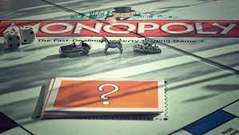
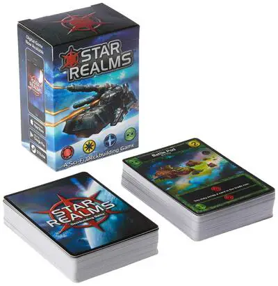
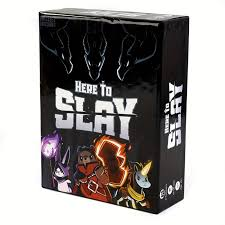

Strategies
Monopoly
Winning Monopoly requires a combination of strategy and negotiation skills. To improve your chances of victory: Property Acquisition: Focus on obtaining property sets, especially the cheaper ones early in the game. Build houses and eventually hotels to increase rent. Monopolies: Aim to monopolize property groups. Owning all properties within a color group increases rent significantly. Trading: Negotiate with other players to complete property sets or acquire valuable properties. Seek mutually beneficial deals, but don't make trades that could create a monopoly for your opponents. Cash Management: Keep a reserve of cash for unforeseen expenses, like landing on an opponent's expensive property. Avoid overspending on properties you can't develop right away. Jail Strategy: Don't rush out of jail. Staying in jail can save you from landing on opponents' developed properties. Only pay to get out if your chances of landing on a harmful square are high.
Settlers of Catan
In Settlers of Catan, winning depends on careful resource management and strategic expansion: Resource Diversity: Aim for diverse resource hexes to ensure a steady supply of resources. Avoid overemphasizing a single resource type. Build Roads Early: Establish road networks to reach new settlement locations and control important resource hexes. Longest Road: Pursue the Longest Road bonus points, as it can be a game-changer. Keep an eye on what your opponents are doing and thwart their road-building efforts. Trading: Trade strategically with other players, making fair deals when it benefits you. Don't hesitate to negotiate for the resources you need. City Development: Upgrading settlements to cities increases your resource output, and obtaining two-to-one ports can further enhance your trading capabilities. Development Cards: Invest in development cards, as they can provide the largest point swings with victory points or the Largest Army bonus.
Star Realms
Star Realms is a deck-building game, and winning involves building an efficient deck: Card Selection: Focus on acquiring cards that complement your existing deck. Look for synergy between faction abilities. Trade and Combat Balance: Strike a balance between trade (acquiring cards) and combat (attacking your opponent's bases). Don't neglect defense. Outpost Priority: Prioritize bases and outposts with high defense values to protect yourself and generate trade. Scrapping: Use cards with the "scrap" ability to thin out your deck, making it more efficient. Economy: Increase your trade production through bases, and acquire bases with card draw abilities to keep your hand full.
Monopoly Deal
Monopoly Deal is a card game that relies on a mix of luck and strategy: Property Sets: Concentrate on completing property sets as soon as possible. These sets are your main source of points. Rent Cards: Collect and use rent cards strategically. Save them for the right moment, such as when an opponent has a valuable set of properties. Action Cards: Use action cards wisely. Stealing properties, charging rent, and breaking up opponents' sets are all valuable actions. Resource Management: Carefully manage your hand to ensure you always have options. Discard or use less valuable cards when necessary. Bluffing: Consider bluffing by holding cards face down. Your opponents won't know whether you're hoarding valuable properties or simply bluffing to confuse them.
Here to Slay
Here to Slay combines strategy and whimsy, with an emphasis on defeating monsters: Party Composition: Assemble a balanced party with different character abilities that complement one another. Having a mix of offensive and defensive abilities is key. Resource Management: Manage your resources (represented by cards) carefully. Don't waste actions on irrelevant monsters or abilities. Monster Selection: Target monsters that align with your party's strengths. Consider the rewards and penalties associated with each monster type. Character Abilities: Utilize character abilities strategically to gain advantages in battles or protect your party. Timing: Choose when to attack, defend, and deploy character abilities to maximize your chances of defeating monsters and gaining victory points.

Secret Hitler
Winning Secret Hitler involves both deduction and persuasion: Information Gathering: Pay close attention to players' actions and voting patterns. Look for inconsistencies and suspicious behavior. Team Building: If you are a Liberal, work on forming a team of trusted players. If you are a Fascist, be subtle in building trust and forming alliances with other Fascists. Bluffing and Deception: As a Fascist, sow confusion and cast doubt on the Liberals. As a Liberal, subtly accuse the Fascists without being overly aggressive. Hitler's Identity: Fascists must protect Hitler's identity and keep them from being elected as Chancellor. Policy Play: As Chancellor, consider the implications of the policies you enact and how it affects your team's chances of winning. As President, choose the right Chancellor who will help your side. Final Election: If the Liberals have enough policies enacted, focus on electing a Liberal government to win. If you're a Fascist, aim to elect a Fascist government without revealing Hitler's identity.